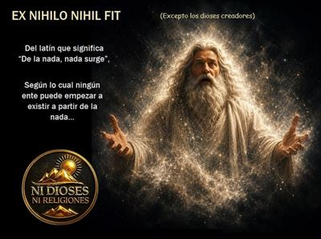

Uno de los argumentos favoritos de los creyentes creacionistas, es esa frase que suena tan contundente y que presentan como si fuera una verdad irrefutable: «Ex nihilo nihil fit»; es decir, «De la nada, nada surge». La citan con frecuencia cuando tratan de refutar lo que ellos consideran la posición ateísta: que el universo salió de la nada hace unos 13.800 millones de años, cuando de pronto comenzó a existir sin que hubiera un creador que provocó ese inicio.


Pero resulta que esa afirmación no describe en absoluto la postura atea, ya que ateísmo lo único que significa es no creer en dioses, sin que eso implique que defienda una teoría específica (y menos una afirmación absoluta) sobre el origen del universo. Y por otra parte, tampoco la cosmología moderna sostiene que el universo salió de la nada absoluta. Los modelos científicos solamente describen un universo observable que comenzó a expandirse hace aproximadamente 13.800 millones de años, pero no afirman que surgiera de una nada que significa la ausencia absoluta de todo. De hecho, el origen del universo sigue siendo un problema abierto en la ciencia, porque la ciencia tampoco tiene todas las respuestas y lo reconoce con honestidad, como también lo hacemos los ateos. Pero no por eso vamos a inventar unas respuestas que nos hagan sentir bien. Por lo que atribuir a los ateos la idea de que «el universo salió de la nada», no es más que una falacia de hombre de paja: una simplificación errónea de una postura, que ni la ciencia ni el ateísmo sostienen.
Ahora bien, mientras los ateos y la ciencia reconocemos —con una postura intelectualmente honesta— que todavía no sabemos exactamente cómo comenzó el universo, la religión prefiere rellenar ese vacío con una explicación sobrenatural: «¿No lo sabemos? Entonces tuvo que crearlo Dios. Ah, y precisamente el Dios en que yo creo, el que describe mi libro sagrado». Una actitud que les resulta emocionalmente satisfactoria y reconfortante, pero que no busca honestamente la verdad. Sin embargo, decir que el universo fue creado por un ser sobrenatural —que sí habría salido de la nada—, es una afirmación extraordinaria que requiere evidencia extraordinaria. De hecho, es una afirmación gratuita, una conclusión que se da por sentada sin aportar ninguna evidencia.
El problema de fondo es, probablemente, lo que se entiende por «nada». ¿Qué es la nada? Desde el punto de vista filosófico, la nada absoluta no existe como un «objeto» o «espacio», sino como un concepto límite. Cuando los filósofos hablan de la nada absoluta, se refieren a la ausencia total de todo: ausencia de materia, energía, espacio y tiempo. También ausencia de campos físicos o leyes de la naturaleza. Es decir, ni siquiera existe un escenario donde algo pueda ocurrir. Es un concepto tan extremo, que nuestra mente ni siquiera puede imaginar, y cuando intentamos hacerlo, solemos visualizar un espacio negro y vacío… pero ese espacio ya es algo.
Estamos pues, ante uno de los conceptos más difíciles de toda la filosofía, porque en el momento que se afirma que la nada «es» algo, se choca con una paradoja lógica: si la nada existe, entonces la nada es algo (tiene la propiedad de existir), y si la nada es algo, entonces ya no es la nada. Porque para que algo exista, requiere un marco de referencia: espacio, tiempo, o al menos un observador. Y la nada absoluta de la filosofía implica la ausencia total de todo esto, incluyendo las propias leyes de la lógica y de la física. Por tanto, la nada absoluta sólo funciona como una herramienta lingüística o un límite mental (la ausencia total de cosas), pero no como una realidad objetiva o un estado físico.
Por otra parte, tenemos lo que en física suele llamarse «nada», en el sentido que lo hace el cosmólogo estadounidense Lawrence Krauss, quien, cuando afirma que un universo puede surgir de «la nada»[1], utiliza la palabra con un significado muy diferente del que tiene en filosofía. Porque la «nada» de Krauss es más bien el vacío cuántico, no la nada absoluta de los filósofos. Por lo que cuando Krauss habla de una «nada profunda» de la que surge el universo, no se refiere a la ausencia total de ser, leyes o espacio. Se refiere a un estado lleno de campos, leyes físicas y energía subyacente.
Porque el vacío cuántico no es la ausencia absoluta de realidad; es el estado de menor energía de los campos cuánticos, donde, aunque no existan partículas materiales, siguen existiendo campos, las leyes físicas que los describen, y en la mayoría de los modelos, una estructura del espacio-tiempo. Y debido al principio de incertidumbre de Heisenberg, ese vacío nunca permanece completamente «quieto», presentando fluctuaciones cuánticas que producen efectos reales y medibles, algunos de ellos confirmados experimentalmente.
Por tanto, podemos decir que, por un lado, desde la filosofía, la nada es un concepto paradójico, contradictorio en sí mismo. Porque simplemente al tratar de imaginarla, ya la estamos convirtiendo en un «objeto de pensamiento», es decir, en algo. Y no se puede conceptualizar un absoluto que niega la posibilidad misma de conceptualizar. Y por otra parte, desde el punto de vista de la física, tampoco existe una nada absoluta entendida como ausencia total de espacio, tiempo, materia, energía, campos y leyes físicas, porque incluso el estado de menor energía contiene campos cuánticos, está gobernado por leyes físicas y presenta fluctuaciones cuánticas.
Sin embargo, la contradicción fundamental en que incurren los creacionistas no es siquiera afirmar que la nada absoluta existe, y que de esa nada, nada puede salir. Su mayor incoherencia está más bien en afirmar que su «Dios» creó el universo, precisamente cuando todavía no existían el espacio, ni la materia, ni el tiempo. Y si «antes del universo» no existía absolutamente nada… ¿dónde estaba «Dios»? No puede responderse que «en el cielo», porque todavía no existía ningún espacio. ¿Y desde cuándo existía «Dios»? Tampoco puede responderse, porque aún no había tiempo. O sea, es difícil no apreciar la paradoja: si realmente la nada absoluta existía, tampoco había un lugar para un creador.
En otras palabras, el problema principal del creacionismo son dos aspectos que suelen pasar desapercibidos: el espacio y el tiempo. Pero el tiempo es quizá el más importante de todos, porque crear implica actuar, y actuar implica un cambio. Es decir, la creación es un proceso en cuyo principio no se ha realizado ninguna acción, pero después la acción ocurre, y eso supone necesariamente una diferencia entre un estado y otro. Es decir, supone algún tipo de orden temporal. Pero si el tiempo aún no existía… ¿qué significa exactamente que en un marco completamente atemporal «Dios» decidió crear y creó?
Porque decidir también requiere un cambio, ya que existe un estado en que todavía no se ha tomado una decisión, y otro en que ya se tomó. Pero sin tiempo, ¿cómo puede existir ese cambio si no existe un «antes» ni un «después»? O sea, no existe un momento para deliberar, ni otro para actuar. Algo que algunos teólogos responden diciendo que «Dios» es eterno y atemporal. Una propuesta filosófica que no resuelve la dificultad, sino por el contrario, abre otra pregunta igualmente profunda: ¿Cómo puede una entidad completamente atemporal producir un efecto temporal sin experimentar ningún cambio? Y no existe una respuesta que satisfaga esa cuestión.
Pero al final quizá el aspecto más curioso de toda esta discusión sea que los defensores del famoso «De la nada, nada surge», terminan defendiendo exactamente el escenario que critican. Porque también afirman que al principio existía una nada absoluta… excepto por un ser sobrenatural que vivía eternamente en ella. Un ser que, sin espacio donde estar, sin tiempo para pensar, y sin un momento en el que poder actuar, decidió crear el universo pronunciando ciertas palabras en medio de la nada absoluta, haciendo surgir el universo… precisamente de la nada. (Y alguien que no estuvo allí, terminó escribiéndolo en un libro que hoy más de la mitad de la humanidad considera sagrado).
[Godless Freeman]
Comentarios
Comments powered by Disqus